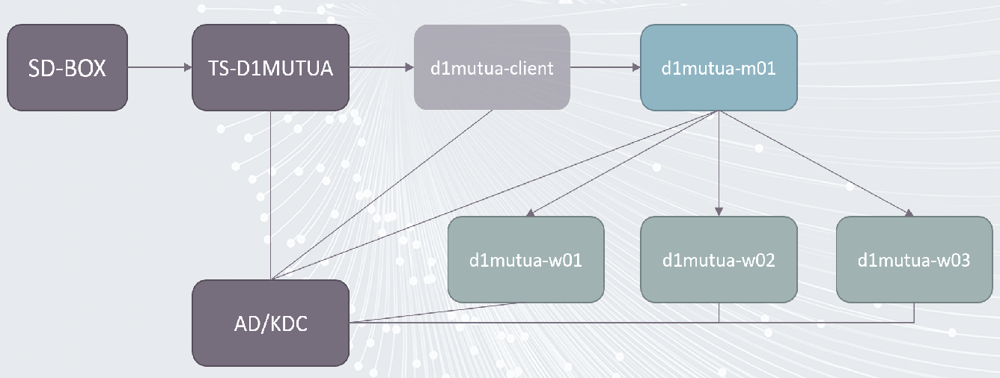

CASD spark/hdfs cluster onboarding¶
This tutorial aims to help you to be familiar on how to use spark/hdfs cluster inside CASD infrastructure.
We will follow the below steps in this tutorial.
- understand the general architecture of the cluster
- check web interface access of the cluster
- check ssh access of the cluster
- check hdfs client of the cluster
- check spark client of the cluster
1. Architecture of the cluster¶
The below figure shows the general architecture of the cluster

- The
TS-D1MUTUA: is the main server(Windows) which you connect to via theSD-BOX. - The
d1mutua-client: is the server(debian 13) which allows you to interact with the spark/hdfs cluster. - The
d1mutua-m01, d1mutua-w01/w02/w03: are the servers which form the spark/hdfs cluster. The end users can not access them directly, but through spark/hdfs client which are installed/configured ond1mutua-client.
2. Check web interface access of the cluster¶
This step happens inside the TS-D1MUTUA server (Windows).
You can visit the following url by using the Firefox web browser.
- hdfs web interface : is the web interface which allows users to view directories and data in the hdfs cluster.
- spark web interface : is the web interface which allows users to view spark jobs and available resources of the cluster.
There is a shortcut created in
Bureau->Raccourcis->Cluster. You only need to double-click on it. AFirefoxweb browser will be opened automatically.The first connection may take few seconds, because of the kerberos ticket and user groups checking. You may also need to accept the certificat if you see warnings.
3. Check the access of d1mutua-client¶
This steps happens inside the TS-D1MUTUA server(Windows). It allows you to test if you can connect to
the d1mutua-client server with your kerberos ticket via ssh protocol.
3.1 Connect to the d1mutua-client server¶
As we mentioned before, to use the spark/hdfs cluster, you need to connect to the d1mutua-clientserver(Linux).
Users can access d1mutua-client server(Linux) via ssh protocol.
To test the connectivity:
- open a
powershellterminal. - type the below command
# ssh is the command
# d1mutua-client.casd.fr is the target server url
ssh d1mutua-client.casd.fr
After the above command, you should see a welcoming message from
CASD. You should also notice the header of thepowershellterminal changed fromC:\Users\..to<user-name>@d1mutua-client.From now on, all the commands you entered inside this terminal will be executed on the
d1mutua-clientserver(Linux).
To disconnect from the d1mutua-clientserver(Linux), use the below command
exit
You should see the header of the
powershellterminal changed from<user-name>@d1mutua-clienttoC:\Users\...
3.2 Transfer data between TS-D1MUTUA and d1mutua-client¶
In this section, we will learn hot to transfer data between TS-D1MUTUA(Windows) and d1mutua-client(Linux):
To facilitate the data transfer, CASD has developed two commands kup and kdown
3.2.1 Use kup to upload data¶
The command kup allows us to upload data from TS-D1MUTUA(Windows) to d1mutua-client(linux) server.
Open a new powershell terminal, then enter the below command
# go to the test data folder
cd C:\Users\Public\Documents\hadoop_cluster_onboarding\data
# upload a single file
kup stats.csv d1mutua-client.casd.fr
# upload a folder
kup -r folder2 d1mutua-client.casd.fr
After the data transfer, the data arrive to the server d1mutua-client.casd.fr. If you want to check the data, you need
to connect to the d1mutua-client server(Linux). Use the first terminal opened in section 3.1 and enter the commands below
# connect to the `d1mutua-client` server
ssh d1mutua-client.casd.fr
# print your current folder path
pwd
# you should see something like /home/<your-username>
# check the uploaded data
ls
# you should see the stats.csv file and folder2
# disconnect from the linux server
exit
# now you are in the windows powershell terminal again
3.2.2 Use kdown to download data¶
The command kdown allows us to download data from d1mutua-client(linux) server to TS-D1MUTUA(Windows).
Reuse the powershell terminal opened in section 3.2.1, then enter the below command
# go to the test data folder
cd C:\Users\<your-username>\Documents\
# download a single file to the windows Dcouments folder
kdown d1mutua-client.casd.fr:/home/<your-username>/stats.csv .
# download a folder the windows Dcouments folder
kdown -r d1mutua-client.casd.fr:/home/<your-username>/folder2 .
Open a file explorer in
TS-D1MUTUA(Windows), and check your Documents, you should see the filestats.csvandfolder2.
If you don't know your username, you can open a new powershell terminal and enter the below command
$env:USERNAME
# for example, the output for me
D1MUTUA_P_LIU0000
3.2.3 Get help¶
If you want to know more details about the two commands, you can enter the below command
# get function description
Get-help kdown
# get function example
Get-help kdown Examples
You can close this terminal if everything works well
4. Check the hdfs client access¶
For now, we only support hdfs client under Linux, so you need to ssh to the d1mutua-client.casd.fr server first.
Open a powershell terminal, and run the below command
# connect to the `d1mutua-client` server
ssh d1mutua-client.casd.fr
You should see a welcome message from
CASD. From now on, as you are in thed1mutua-clientserver(Linux). The powershell command will not work anymore.
In d1mutua-client server(Linux), you have two different file system.
- local file system of d1mutua-client server.
- distributed file system of the hdfs cluster.
Run the below command to test your hdfs client.
# check the hdfs file system
hdfs dfs -ls /
# check user home folder, $USER will be replaced by the current user name
hdfs dfs -ls /users/$USER
# expected output for user D1MUTUA_P_LIU0000
drwx------+ - D1MUTUA_P_LIU0000 hadoop 0 2026-03-11 09:06 /users/D1MUTUA_P_LIU0000/.sparkStaging
-rw-------+ 3 D1MUTUA_P_LIU0000 hadoop 76 2026-03-06 11:18 /users/D1MUTUA_P_LIU0000/stats.csv
drwx------+ - D1MUTUA_P_LIU0000 hadoop 0 2026-03-10 17:16 /users/D1MUTUA_P_LIU0000/tmp
You can also try to access the project folder
# check the projects folder
hdfs dfs -ls /projects
# try to access a project
hdfs dfs -ls /projects/BCL_EEC
4.1 transfer data from local file system to hdfs cluster¶
As spark is a framework for distributed computing, the data must be also distributed. That's why spark can't use
data from the local file system of d1mutua-client server. As a result, we must transfer data from local file system to hdfs cluster
Use the same terminal of section 4. The below commands run inside d1mutua-client server.
# go to your home directory of `d1mutua-client` server
cd
# check data in the local file system
ls
# you should see stats.csv in the output. We copied in section 3.5.2
# now upload data from `local file system` to `hdfs cluster`
hdfs dfs -put stats.csv /users/$USER/
# check the data in hdfs
hdfs dfs -ls /users/$USER
5. Check the spark client access¶
First check if you have spark installed in your environment. Use the same terminal of section 4.1. The below commands
run inside d1mutua-client server.
# check current spark runtime version
spark-submit --version
# check if you have kerberos ticket
klist
# create your first spark job
nano job1.py
Put the below code in the
job1.pyfile
from pyspark.sql import SparkSession
def main():
# Create Spark session
spark = SparkSession.builder \
.appName("pengfei_test") \
.getOrCreate()
# For a basic test, create a small DataFrame
df = spark.createDataFrame([
("Alice", 25),
("Bob", 30),
("Charlie", 35)
], ["name", "age"])
df.show()
# Just for validation: print row count
print(f"Total rows: {df.count()}")
spark.stop()
if __name__ == "__main__":
main()
use
ctrl+ofor saving file, you need to chooseyesto confirm. Then usectrl+xfor exiting nano.
Now we can submit the job to the cluster with the below command
spark-submit --name=pengfei_test_job job1.py
By default, we have configured the spark client in mode cluster. So nothing runs in
d1mutua-client.casd.fr. As a result, you don't need to install python environment and pyspark You can check the status of your job via yarn web UI.
5.1 Use spark cluster in interactive mode¶
We have seen how to submit job to the cluster. For exploring data, you may want to your spark job interactively(client mode).
In this mode the spark driver runs on d1mutua-client.casd.fr. So we need to install a python virtual environment and pyspark
Use the same terminal of section 5. The below commands run inside d1mutua-client server.
# check your python version
python3 -V
# create a virtual env
python3 -m venv spark_venv
# activate the python venv
source spark_venv/bin/activate
# check installed libs
pip list
# install pyspark, the pyspark version must match the spark version in the cluster
pip install pyspark==3.5.7
# install jupyterlab
pip install jupyterlab
To facilitate the usage of jupyterlab, CASD has developed a launcher to avoid port conflict between users. To start a jupyterlab, you can run
run_jupyterlab
# expected output
INFO: Using port: 8888
INFO: JupyterLab server runs with URL: http://d1mutua-client:8888/lab?token=79b0a30a9a2fc6adae67...482d4a77ea70d
INFO: To stop the JupyterLab, use ctrl+C or close the terminal.
You need to copy the jupyterlab url and open it with a browser in TS-D1MUTUA.